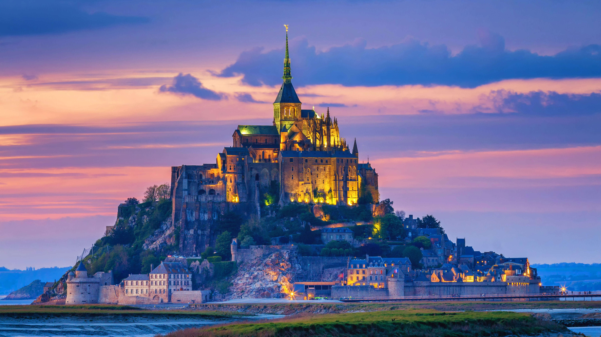
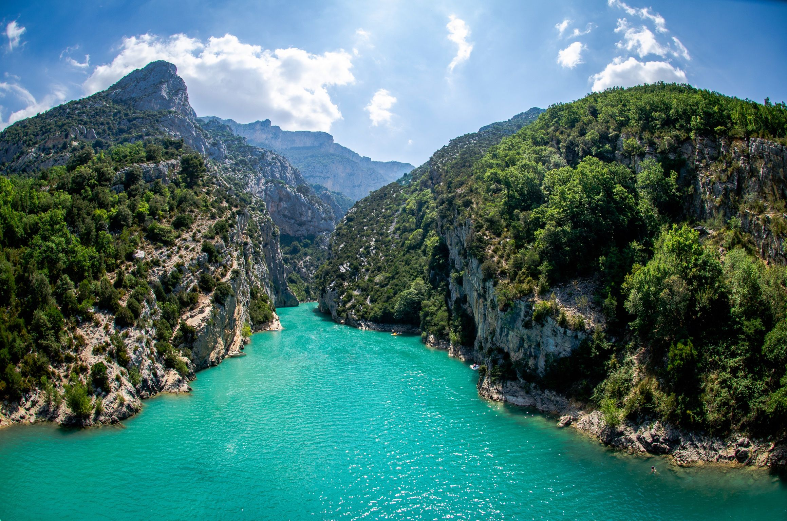
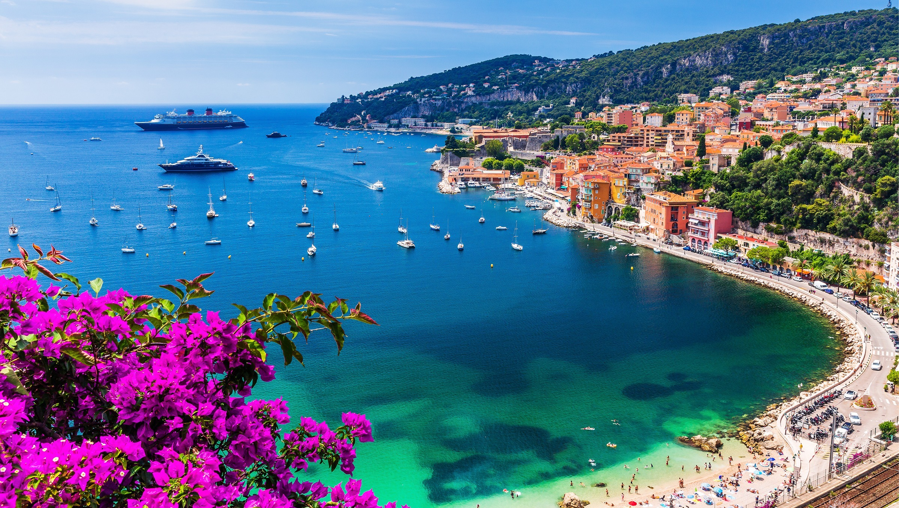
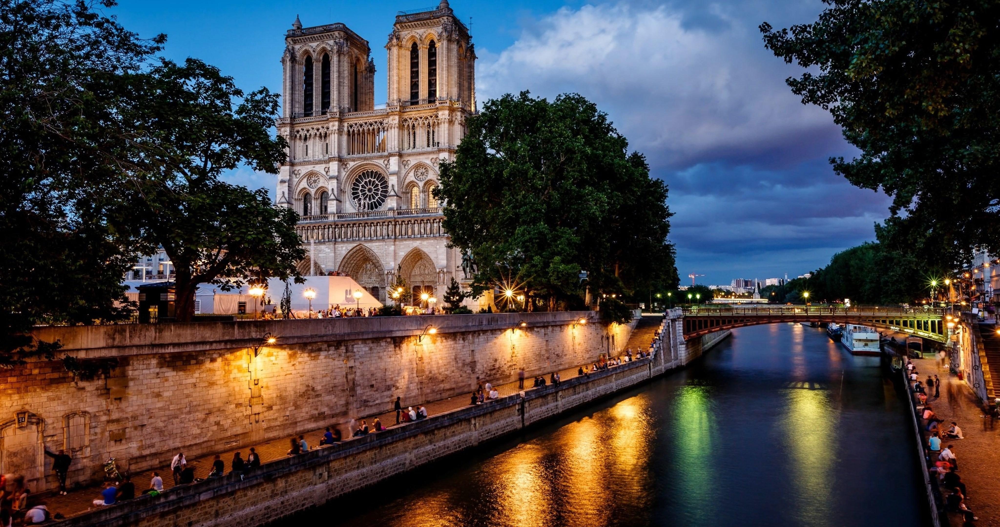
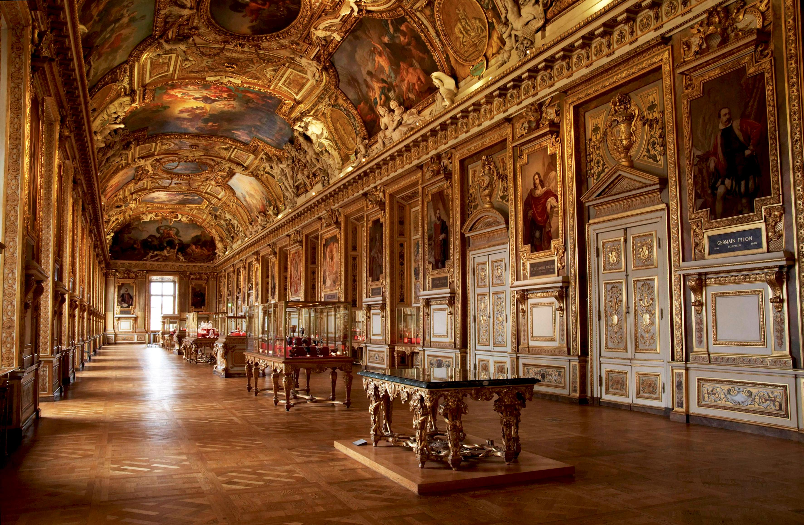
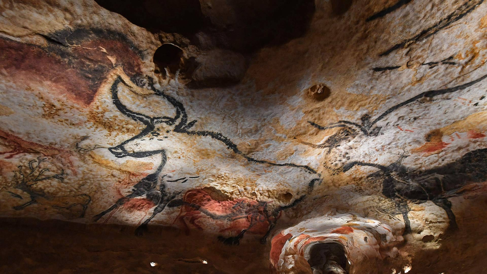
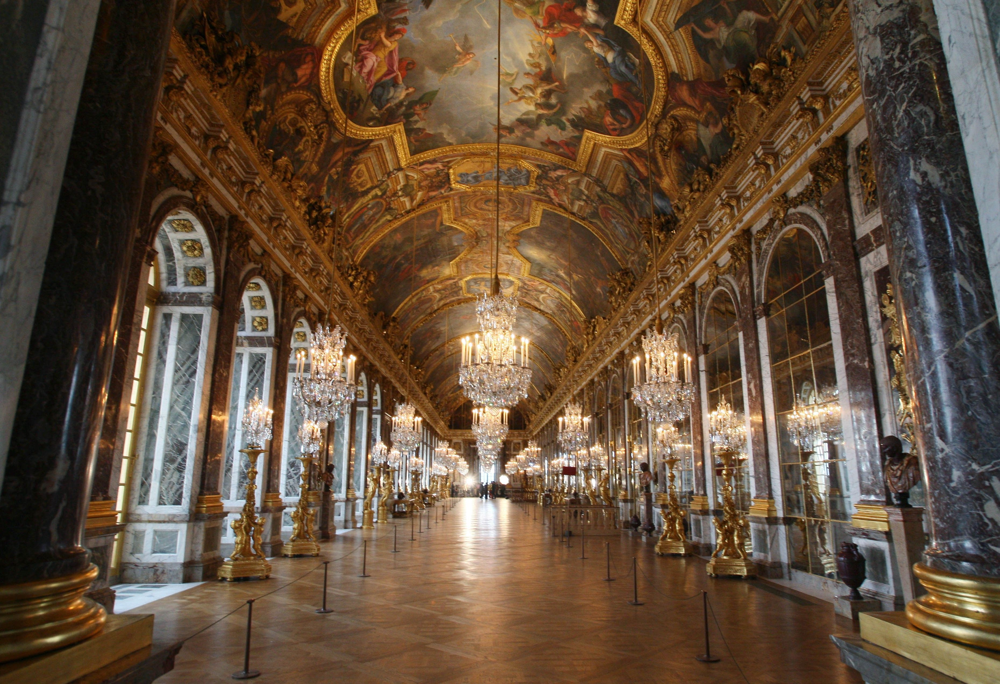
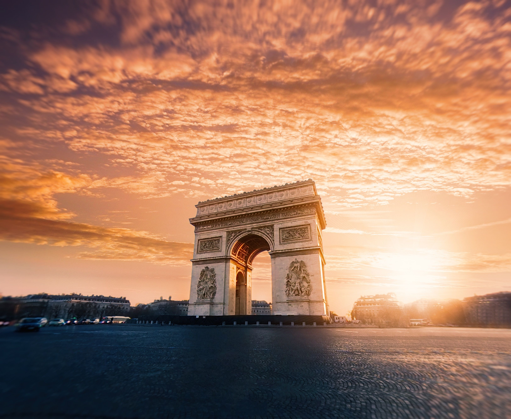

Highlights
Popular Destinations









France awakens the senses in ways that feel both timeless and immediate. It is a place where art, cuisine, and history weave together seamlessly, where the romance of old streets meets the rhythm of modern life. From lavender fields to snow-capped Alps, from quiet villages to glittering boulevards, every landscape tells its own story of beauty and pride.
Picture the soft light over the Seine at dusk, or the hum of a Parisian bakery before sunrise. Imagine the scent of fresh bread mingling with perfume in the air, and the sound of laughter spilling from a corner bistro. The country's magic lies in its balance of elegance and simplicity, where joy is found in both grand art and small moments.
There is a gentle poetry to France that reveals itself in quiet, unhurried moments. Morning light spilling across cobblestone streets, the scent of fresh pastries drifting from a café, or the sound of church bells echoing through the countryside remind you that life here moves with grace and intention.
Every experience offers a glimpse into the heart of France. You may stroll through vineyards where history ripens with the grapes, pause before art that stirs the soul, or share laughter over bread still warm from the oven. Its charm lingers in gestures, flavors, and conversations that feel effortlessly sincere.
As the days unfold, layers of history and artistry begin to surface. You might lose yourself in the stillness of a countryside vineyard, stand before a painting that feels alive, or share laughter over a meal prepared with care. What remains when you leave is more than memory; it is a quiet shift in how you see the world.
Browse open-air markets and boutique shops filled with handmade treasures, from Provençal ceramics to artisan chocolates and lavender soaps. Take home local wines, cheeses, or perfumes crafted in Grasse.
Savor the rich variety of French cuisine, from buttery croissants and fresh seafood to slow-cooked stews and fine cheeses. Every meal celebrates regional heritage.
Enjoy a morning espresso at a corner café, a glass of Bordeaux shared among friends, or sparkling cider from Normandy's orchards.
Travel across France easily by high-speed train, regional rail, or short domestic flights. Scenic routes wind through rolling vineyards, alpine peaks, and sunlit coastlines.
Public transportation, taxis, and bike rentals make exploring simple and efficient. Strolling through historic districts, riverbanks, and open squares offers the best view of daily life.
Leave the cities behind to experience France's quieter side. Wander through the lavender fields of Provence, the cliffs of Normandy, or the lakes and forests of the Alps.
Central European Time (CET), which is GMT+1, and observes daylight saving time from late March to late October.
Uber, Bolt, and Free Now are available in most major cities and offer a reliable way to get around. Taxis are easy to find, though using licensed services or booking through official apps ensures clear pricing.
France uses 230V electricity with a frequency of 50Hz. Outlets generally fit plug types C and E, so travelers from other regions may need a universal adapter.
France enjoys a varied climate, with mild winters and warm summers that differ by region. The Mediterranean south is sunny and dry, while the north and west experience cooler temperatures.
France has long been a centerpiece of global cinema, featured in classics like Amélie, Midnight in Paris, and The Da Vinci Code. The nation has produced legendary figures such as Brigitte Bardot, Marion Cotillard, and director Jean-Luc Godard.
Emergency Services: 112
Police: 17
Medical Emergency: 15
Fire Brigade: 18
Country Code: +33







